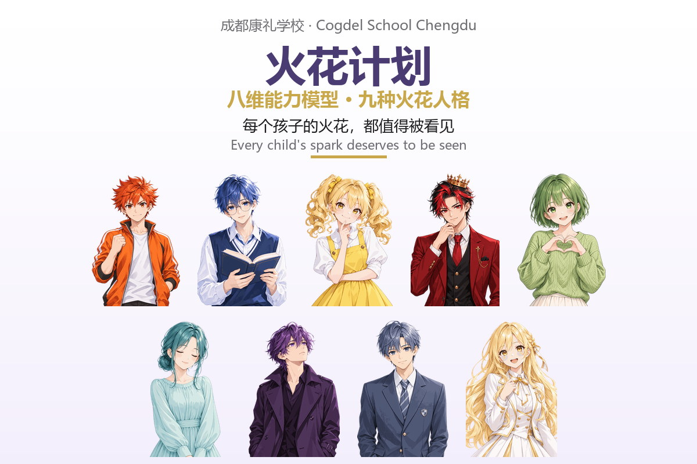
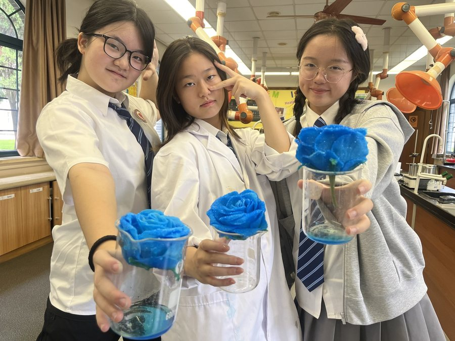
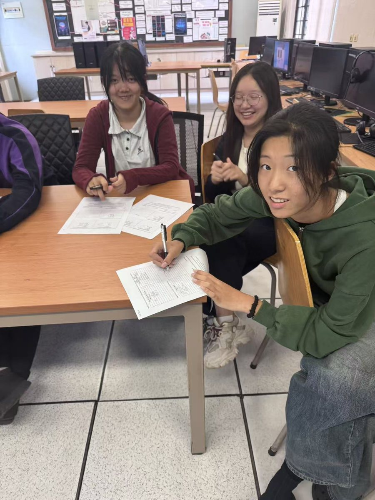
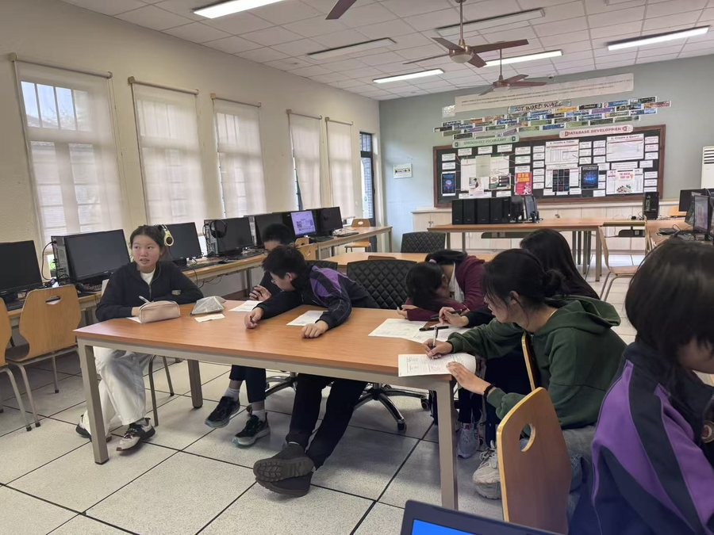
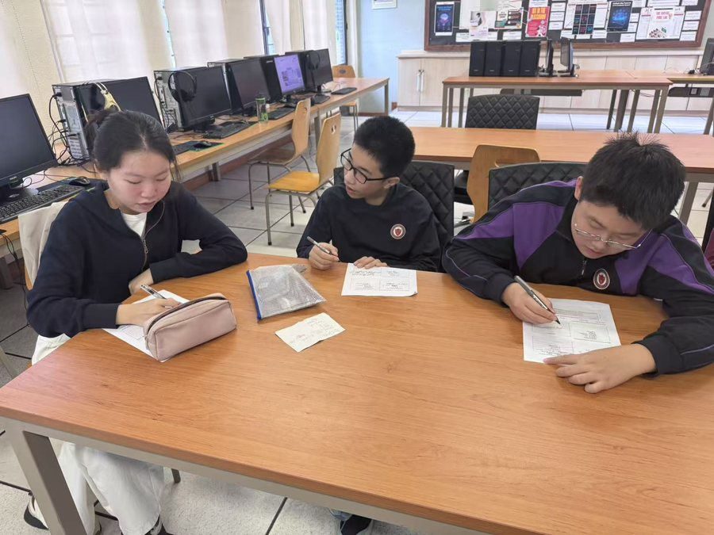
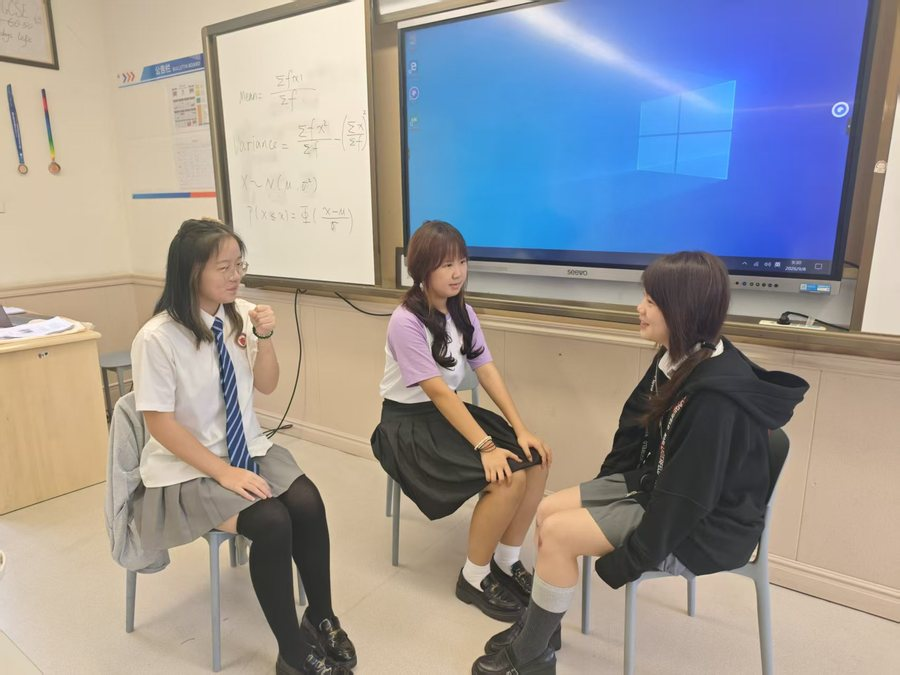
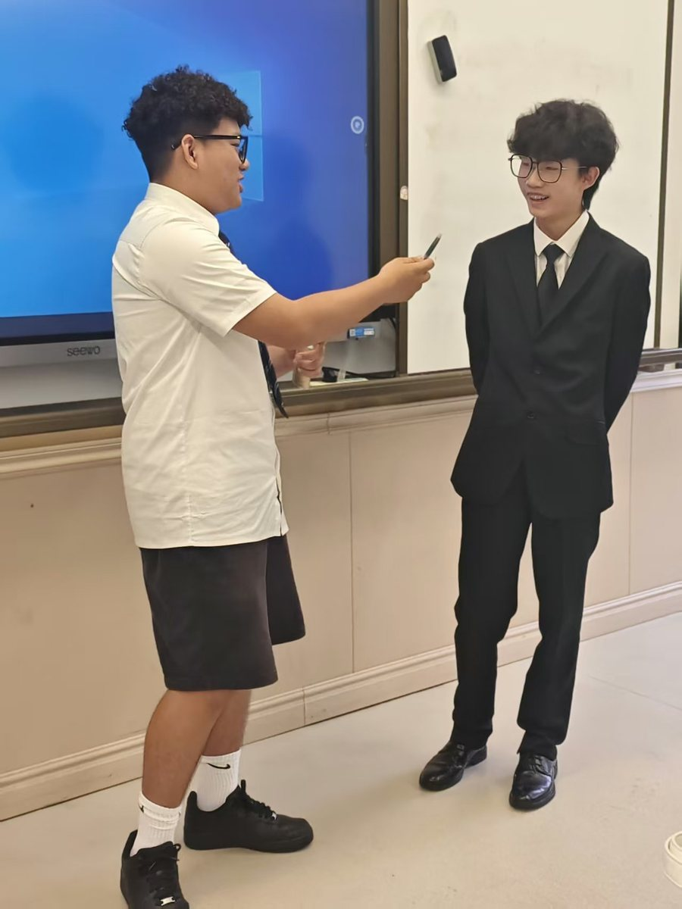
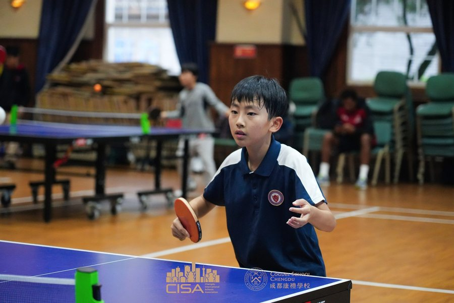

Cogdel School Chengdu has launched Cogdel Spark. Our teachers capture a child's shining moments in daily lessons and campus life, and each spark maps to one dimension of whole-person growth. These recorded moments are exactly what becomes the weekly growth letter parents receive.

Every child's spark deserves to be seen
We record these moments not to grade — but so every child knows: your light is seen.
The Eight Dimensions
Rooted in whole-person education, Cogdel traces growth across eight dimensions. This is not a report card — it is the coordinate system our teachers use when observing and recording.
Well-beingUnderstands and cares for their own well-being, staying steady under pressure and change.
LearningActively builds knowledge, turns learning into understanding — and grows into a lifelong learner.
InnovationBuilds on existing methods, daring to propose new ideas and solve problems creatively.
AgencySets goals from within, takes initiative and drives forward without external prompting.
LeadershipPaints a shared direction, makes sound judgments and brings others together to get things done.
CollaborationCommunicates clearly, thinks from others' perspectives, and builds trust to create synergy.
VisionUnderstands the world from broader perspectives and a longer horizon, integrating resources and anticipating trends.
StewardshipConnects choices to the long-term wellbeing of others and society, and takes responsibility for that impact.
Nine Spark Types
Every child is a unique mix of the eight dimensions — we distilled these into nine archetypal spark types:
Self-Starter
Lifelong Learner
Rule-Breaker
The Glue
The Decider
The Anchor
The Stargazer
The Backbone
All-Rounder
Take the Spark Quiz Online
We turned the eight-dimension model into a light interactive quiz: 12 random questions drawn from everyday school and life situations, about 1 minute, no right or wrong answers. You will get your own eight-dimension radar chart and a spark-type card you can save and share.
✨ Start the Spark Quiz
New to Cogdel Spark? Read the introduction ›
Where Sparks Come From
Sparks are not prepared materials — they are moments teachers genuinely notice: three students measuring gravity's acceleration at 9.88, the closest to the real value in eight years; a child who once struggled with vocabulary scoring 16/25 on dictation; a child studying quietly in the library during the lunch break, with no one needing to push them.
Recorded and sorted into the eight dimensions, these moments become the weekly growth letter parents read — and a concrete, visible growth path for the child.
Real Spark Records
A few real records from campus (student names withheld). Each one shows which of the eight dimensions it belongs to, and the growth level it currently sits at: L1 Dependent · L2 Structured · L3 Individualised · L4 Resilient · L5 Influential.



AgencyL4 Resilient2026-09-11
When we did this experiment for the first time, we had high expectations, but the results were far from ideal. To our pleasant surprise, the students did not give up. Together, we analyzed the reasons for the failure. When we planned to do it a second time, we ran into the problem of not having enough hair dryers in the lab. The students proactively offered to bring their own hair dryers, and on the day of the experiment, they brought 6 hair dryers in total. "When you face difficulties, find a way instead of avoiding them"—I am very happy to see this valuable quality in you.



LearningL2 Structured2026-09-15
In our Computer Science class, students are introduced to a wide range of smart devices and their real-world applications. Through this lesson, they develop a better understanding of how these technologies are used in everyday life and why they are important. All students are highly engaged and enthusiastic as they work through their worksheets, demonstrating active participation and a strong willingness to learn. Their thoughtful responses and lively involvement create a positive and productive classroom atmosphere. Great job!
StewardshipL3 Individualised2026-09-14
In their interactions with cats, students learn to love, to protect creatures weaker than themselves, to understand that this Earth is home to all living beings, and to recognize that raising a living creature requires dedication and hard work.
CollaborationL5 Influential2026-09-02
We started reading the English novel tonight. Ben voluntarily joined the English reading club and, during our first reading session today, acted as a little teacher. He proactively helped classmates with words they didn't understand and actively participated in the story discussion. Thumbs up!



InnovationL3 Individualised2026-09-08
In the Chinese oral class, the IG students conducted group interviews and dialogues about "My Life" in groups. Each group's interview style was different. The group of Jack, Tom, and Jemmy mainly explored the differences in personal life and entertainment styles; the dialogue among Yilin, Amy, and Linnea showed more humanistic care, as they not only discussed daily life but also raised questions about difficulties encountered in life or study. The topics chosen by Stella, Savanah, and Winnie were somewhat unexpected, focusing on their respective lives many years later. The interview atmosphere was lively and full of imagination. Although the students still had room for improvement in terms of interview language and depth of topics, they all showcased their own unique styles within the limited preparation time!



Well-beingL3 Individualised2026-09-10
At the CISA table tennis competition, I saw the wonderful performances of the children. In the tiny table tennis ball lies a great passion. They are focused and brave, fearing no opponent and staying calm regardless of wins or losses. Whether they win or lose, this dedication and persistence shine especially bright. With every brilliant return, they show a spirit that refuses to give up.
To learn more about Cogdel Spark and our growth support system, or to book a visit to our campus in the 5A Anren Ancient Town scenic area, please call +86 400-803-6661 or follow our WeChat account “Cogdel School Chengdu”.